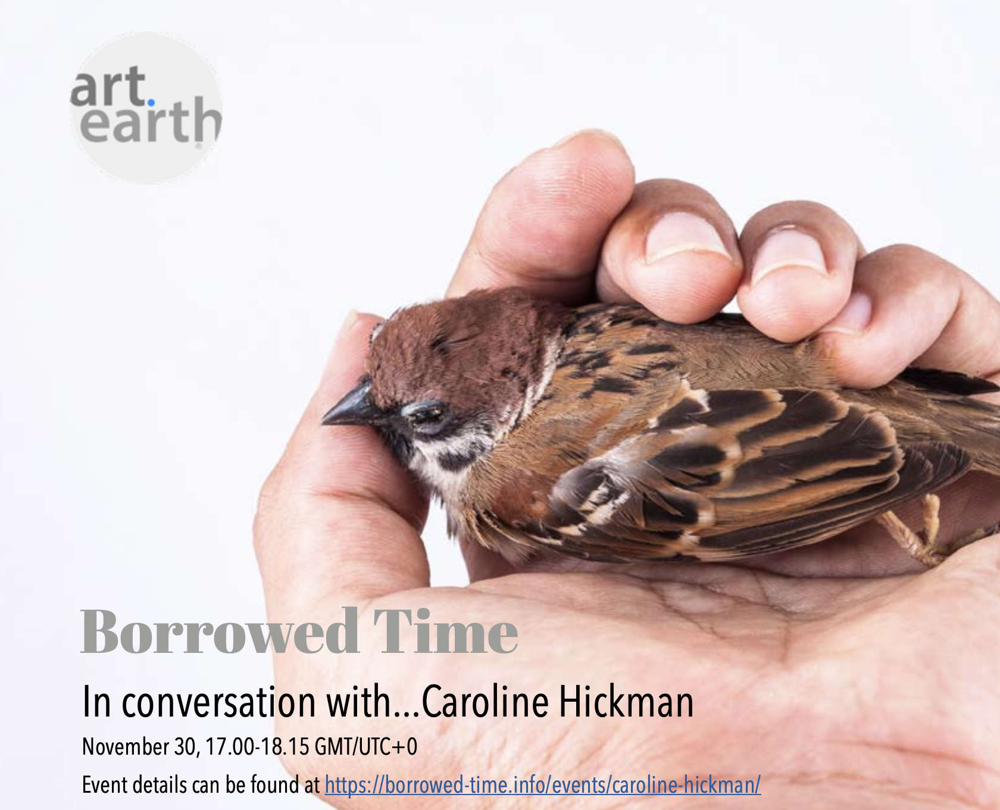

broke his right olecranon in the summer of 2022, resulting in the surgical
implanting of two, four-inch-long nails through the crook of his elbow.
Rob is a commendable artist, composer, performer, writer, and storyteller from the West
edge of England. His accepting embrace of the subtlety and imperfection of human nature
has successfully laid the groundwork for producing honest and intimate works of art, theatre, and music.
At the beginning of 2023, Rob shaved his shoulder length hair to the scalp for added 'shock factor'
in the performance of his work Rondo a la Womb. The self-administered haircut was
unsuccessful in parts, resulting in mixed feedback from his peers: "you look like a baby duck", claimed
one member of the audience.
Throughout 2023-24, Rob worked amongst a dynamic team of theatre
makers at Rogue Otherworld,
collaborating in the creation and production of "immersive wild theatre
that celebrates the wonders of life, culture, human connection and our connectedness with nature".
Rob also appeared on stage with the team year-round, including shows at Glastonbury Festival and in
the wilds of Tehidy Woods, Cornwall. Moving away from Cornwall at the end of 2024, Rob now works as a
multi-instrumental music teacher at Rocksteady Music School.
This is surrounded by a plethora of creative work of his own.
These works explore the issues, beauties, and subtleties
that we encounter in our everyday life, covering a range of outputs from experimental performance
pieces, to innovative installations, contemporary audio-visual compositions, and live theatre
experiences.
Despite Rob Harrison's success since breaking his arm, he still sets off airport security metal detectors to this day.
Recommendations
"...new points of compositional departure... open-minded, curious, and constructive style"
- Jim Aitchison, composer and artist
Terra Incrementum - Full Score
Artificial intelligence can be a remarkably effective tool in various applications, but it can also evoke a sense of terror. The natural world holds a sacred status that demands our respect and protection at any expense. This composition aims to explore the conflict between human and robotic performance, offering insight into our collective culpability and awareness of our impact on the environment. At the same time, it instils a sense of unease, highlighting the urgency of immediate action. It's worth noting that this statement was generated using artificial intelligence.
An artist is consistently pulled from alignment to alignment through bouts of inspiration and commiseration. When an artist finds meaning in situation, they must clutch hold and make their concept a reality. This reality was hard to materialise, yet it brought with it a new-found love for the hardship of making art.
Given the necessary sense to consume music is one's hearing, the visual element can be interpreted in many ways. This collaborative work for piano serves as an insight into the possibilities of the interaction between a sound artist and a visual artist when the brief holds no constraints.
The arts perform and performing is art. Thou wouldst be great - Art not without ambition, but without - The illness should attend it.
Education is the only essential component to all of us artist's work. Mr. Sunak's pre-prime-ministerial pledge to phase out university degrees that do not improve students' "earning potential" has set itself in place to kill off the art that we create. The essence of this project exists to directly combat this brutal murder and is observed from the very source, the early years.
The first time that man flipped a switch and heard his own voice emitted through electronic signals, they would have been enamoured. Fast-forward a century or so, and we have little magic metal books that can process that information in an instant, and manipulate it with infinite possibilities. It leaves us with the question: are we better artists when we are given more, less, or no constraints at all?

In collaboration with Amanda Brown (connected through Falmouth University), Requiem for Lost Species was composed as a sound art experiment that made use of the cries, calls, and clamours of various endangered and extinct species. The piece heavily features Morse code as a rhythmic and narrative device attempting to supply the animals themselves with a voice they can use to convey their suffering. The work was showcased at a talk with the organisation 'art.earth' called 'Borrowed Time with Caroline Hickman'.
[back to top]